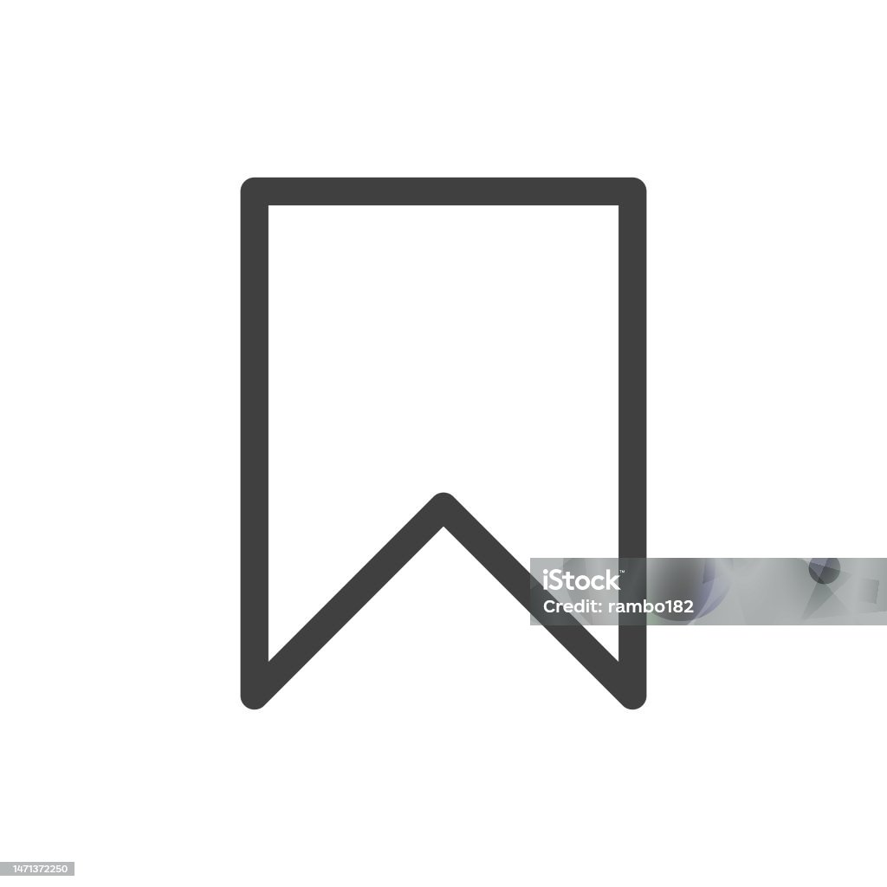
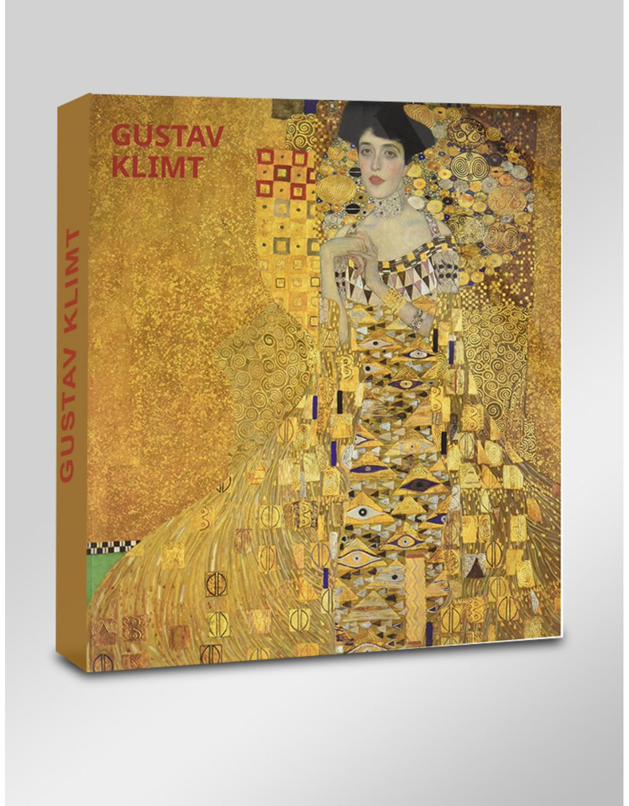
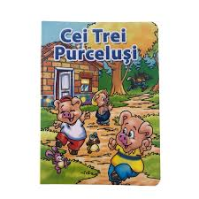

Popularitatea titlului "The Long Walk"
Aprecierea cititorilor noștri pentru acest Bestseller:
Nota comunității:Lumea cărților la picioarele tale
"Un cititor trăiește o mie de vieți înainte de a muri. Cel care nu citește niciodată trăiește doar una."
StackReader este o platformă modernă de e-commerce dedicată pasionaților de lectură, concepută pentru a reuni un portofoliu vast de titluri.
ATENȚIE: Cititul excesiv de cărți de calitate poate cauza simptome severe de cultură generală și o poftă subită de a corecta gramatica prietenilor pe internet!
Prin intermediul unei interfețe intuitive, oferim servicii de cumpăra online, filtrare avansată și recomandări editoriale absolut vitale pentru supraviețuirea ta socială, în cazul în care mai plănuiești să ieși din casă și să pari un intelectual veritabil.
Aprecierea cititorilor noștri pentru acest Bestseller:
Nota comunității:
StackReader oferă reduceri de 10% 15% pentru toate produsele din
categoria Bestsellers.
Oferta este valabilă sâmbăta și duminica pentru toți membrii comunității noastre.
Calculul prețului final se realizează conform formulei:
Profită de selecțiile noastre editoriale:
Rămâi la curent cu activitățile comunității noastre:
Catalogul complet organizat pe domenii de interes:
Apasă pe secțiunile de mai jos pentru a afla mai multe despre experiența StackReader.
Fiecare achiziție efectuată pe platforma noastră îți aduce puncte de recompensă.
Oferim o Garanție de Retur conform legii. Returul se face în 14 zile.
Specialiștii noștri oferă recomandări editoriale adaptate în funcție de istoricul tău de cumpărături.
Un abonament activ îți oferă acces la biblioteca digitală și transport gratuit la orice comandă.
Da, selectează ridicarea de la sediul nostru din librărie București pentru a evita taxele de curier.
StackReader respectă confidențialitatea datelor tale conform noilor reglementări europene.


| Categorie Zile | Ziua Săptămânii | Program Sediu | Suport Call Center |
|---|---|---|---|
| Zile Lucrătoare | Luni - Joi | 09:00 - 18:00 | 08:00 - 20:00 |
| Vineri | 09:00 - 17:00 | 08:00 - 19:00 | |
| Sâmbătă | 10:00 - 14:00 | 10:00 - 16:00 | |
| Duminică | Închis | Închis | |
| Sărbători | Închis | Închis | |
| Notă: Închis în prima zi a lunii. | |||